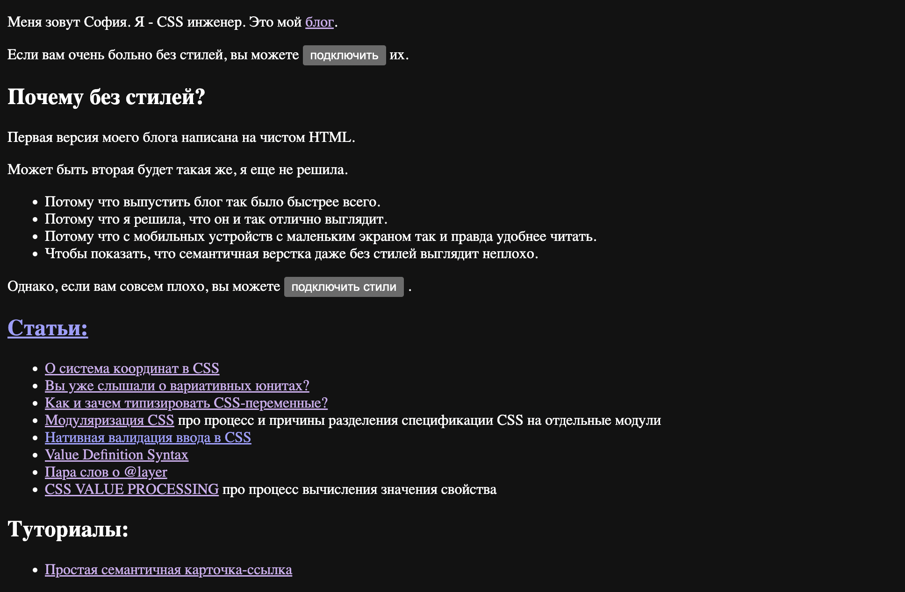

Меня зовут София. Я - CSS инженер.
RTL
это
правда
очень
просто
Мы будем говорить про:
- режимы написания текста
- их поддержку в интерфейсах
120-500 письменностей
4 режима письма
Слева направо cверху вниз - LTR
What do we need to make a cake:
Everything must be mixed in equal proportions and baked in the oven over low heat. Serve with fruit and
whipped cream.
Справа налево cверху вниз - RTL
ماذا نحتاج لعمل كعكة:
- دقيق
- بيض
- الحليب
يجب خلط كل شيء بنسب متساوية وخبزه في الفرن على نار خفيفة. تقدم مع الفاكهة والكريمة المخفوقة.
Сверху вниз справа налево
ケーキを作るために必要なもの：
すべてを同じ割合で混ぜ合わせ、弱火でオーブンで焼く必要があります。 フルーツとホイップクリームを添えて。
Сверху вниз слева направо

Простой пример
Large eggplants run after people in their dreams
الباذنجان الكبير يلاحق الناس في نومهم
Простой пример
<p dir="ltr">
Large eggplants run after people in their dreams
</p>
<p dir="rtl">
الباذنجان الكبير يلاحق الناس في نومهم
</p>
Стили для английского:
p { border-left: 5px solid lavender; }
Стили для арабского:
p { border-right: 5px solid lavender; }
p {
border-color: lavender;
border-width: 3px;
}
[dir="ltr"]p {
border-left-style: solid;
}
[dir="rtl"]p {
border-right-style: solid;
}
Как это обычно бывает на самом деле:
p {
border: 3px solid lavander;
}
Берём плагин postcss-rtl:
[dir] div {
border-color: lavender;
border-width: 3px;
}
[dir="ltr"] div {
border-left-style: solid;
}
[dir="rtl"] div {
border-right-style: solid;
}
Чуть получше...
div {
border-color: lavender;
border-width: 3px;
}
div:dir(ltr) {
border-left-style: solid;
}
div:dir(rtl) {
border-right-style: solid;
}
Чуть получше могло бы быть :((

В общем, оба варианта громоздкие :((
[dir] div {
border-color: lavender;
border-width: 3px;
}
[dir="ltr"] div {
border-left-style: solid;
}
[dir="rtl"] div {
border-right-style: solid;
}
div {
border-color: lavender;
border-width: 3px;
}
div:dir(lrt) {
border-left-style: solid;
}
div:dir(rtl) {
border-right-style: solid;
}
А почему у нас вообще есть такие проблемы?
Физическая система координат
верх
право
лево
низ
Плохо подходит для текста
Как можно описать режим письма?
Как можно описать режим письма?
- Куда направлена строка.
- Куда будет переноситься строка, если в одну строку текст не влезет.
- Куда ориентированы буквы в строке.
Направление потока блоков

Направление потока блоков

Направление строки

Ориентация строки

Как можно влиять на эти три оси?
writing-mode
- horizontal-tb
- vertical-lr
- vertical-rl
- sideways-rl
- sideways-lr

writing-mode
- horizontal-tb
- vertical-lr
- vertical-rl
- sideways-rl
- sideways-lr


writing-mode
- horizontal-tb
- vertical-lr
- vertical-rl
- sideways-rl
- sideways-lr

А как же direction?
Лево сверху. Или право.
Лево сверху. Или право.
Лево сверху. Или право.
writing-mode
- horizontal-tb
- vertical-lr
- vertical-rl
- sideways-rl
- sideways-lr
Типографический режим
Это концепция, отличающая вертикальный набор текста от горизонтального набора с поворотом.
Типографический режим
Этот текст просто повернут на бок.
Этот текст просто повернут на бок
Этот текст написан в вертикальном режиме письма.
Этот текст написан в вертикальном режиме
writing-mode
- horizontal-tb
- vertical-lr
- vertical-rl
- sideways-rl
- sideways-lr

writing-mode
- horizontal-tb
- vertical-lr
- vertical-rl
- sideways-rl
- sideways-lr

Теперь мы можем управлять осями.
А как мы можем их использовать?
Вернемся к примеру из начала доклада
Где должна быть граница?
Large eggplants run after people in their sleep
الباذنجان الكبير يلاحق الناس في نومهم
Граница должна быть у начала строки.
Логические свойства
Размеры
width, height => block-size, inline-size
p {
block-size: 100px;
inline-size: 150px;
}
Hello everyone!
こんにちは、みんな！
Размеры
width, height => block-size, inline-size
min-width, min-height =>
min-block-size, min-inline-size
max-width, max-height =>
max-block-size, max-inline-size
Отступы
padding
-left
-right
-top
-bottom
=>
padding
-inline-start
-inline-end
-block-start
-block-end
Отступы
padding-inline-start: 4em;
Hello everyone!
こんにちは、みんな！
اهلا بالجميع!
Отступы с двух сторон
padding: 0 60px;
padding: 60px 0;
Hello
Отступы
padding-inline: 4em;
Hello everyone!
こんにちは、みんな！
اهلا بالجميع!
Отступы
margin
-left
-right
-top
-bottom
=>
margin
-inline-start
-inline-end
-block-start
-block-end
Границы
border
-left
-right
-top
-bottom
=>
border
-inline-start
-inline-end
-block-start
-block-end
Границы
border
-left-width
-right-width
-top-width
-bottom-width
=>
border
-inline-start-width
-inline-end-width
-block-start-width
-block-end-width
border
-left-style
-right-style
-top-style
-bottom-style
=>
border
-inline-start-style
-inline-end-style
-block-start-style
-block-end-style
border
-left-color
-right-color
-top-color
-bottom-color
=>
border
-inline-start-color
-inline-end-color
-block-start-color
-block-end-color
Границы
border-inline-start: 0.2em solid lavender;
Hello everyone!
こんにちは、みんな！
اهلا بالجميع!
Границы
border-inline-start: 0.2em solid lavender;
Large eggplants run after people in their sleep
الباذنجان الكبير يلاحق الناس في نومهم
Логические ü•∞üíÑü•≥ свойства ü§©ü•µüíÖ
div {
border-color: lavender;
border-width: 3px;
}
div:dir(ltr) {
border-left-style: solid;
}
div:dir(rtl) {
border-right-style: solid;
}
div {
border-inline-start:
0.2em solid lavender;
}
Границы
border-inline: 0.2em solid lavender;
Hello everyone!
こんにちは、みんな！
اهلا بالجميع!
Позиционирование
При position: absolute обычно используются left, right, top, bottom.
Но теперь есть новое свойство inset.
Позиционирование: inset
inset-block-start
inset-block-end
inset-inline-start
inset-inline-end
Позиционирование: inset
inset-block
inset-inline
Позиционирование: inset
position: absolute;
left: 0
right: 0
top: 0
bottom: 0
Позиционирование: inset
position: absolute;
inset: 0
Новые значение
caption-sidefloat, cleartext-align
top,bottom
block-start
block-end
inline-start
inline-end
Новые значение
caption-sidefloat, cleartext-align
left,right
inline-startinline-end
Новые значение
caption-sidefloat, cleartext-align
left,right
inline-start inline-end
Всё про box sizing
- размеры
- отступы
- границы
Всё про box model
- позиционирование
- обтекание
А что с поддержкой?
Поддержка хорошая

.banner {
color: #222222;
padding-inline: 20px 40px;
transition: color 200ms;
}
.banner:dir(ltr) {
padding-left: 20px;
padding-right: 40px;
}
.banner:dir(rtl) {
padding-right: 20px;
padding-left: 40px;
}
.banner {
color: #222222;
transition: color 200ms;
}
Псевдокласса на вертикальность написания нет.
Поэтому есть два пути:
- статус-класс на body и отдельная версия стилей
- логические свойства ü•∞
p {
padding-left: 1em;
padding-inline: 1em;
}
p:dir(ltr) { padding-left: 2em; }
Итого
- Языков много
- Физическая система координат не походит для стилизации текста
- Удобнее использовать flows relative
- Её осями можно управлять
- Лучше использовать логические свойства, чем не использовать
- Не только, потому что они зависимы от потока
- Для этого есть инструменты
Дальше больше

Дальше больше

Дальше больше

София Валитова из Cube
Презентация сделана с помощью Shower.